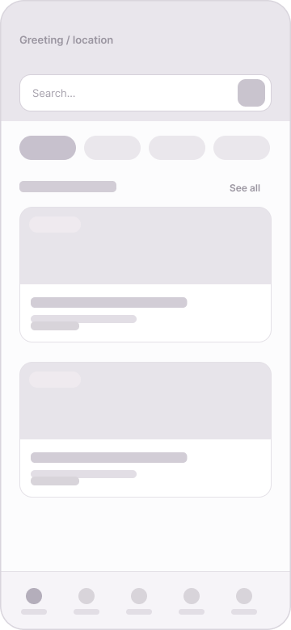
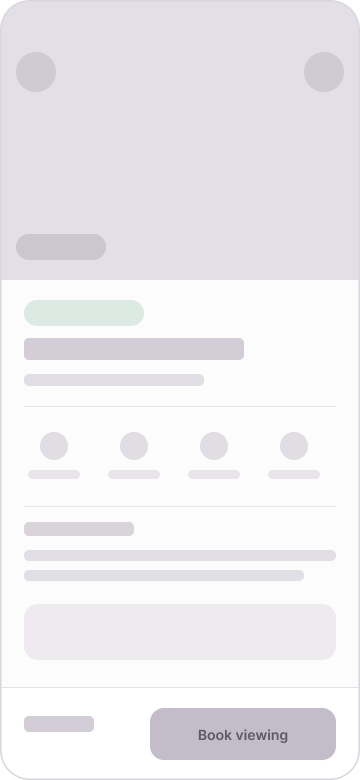
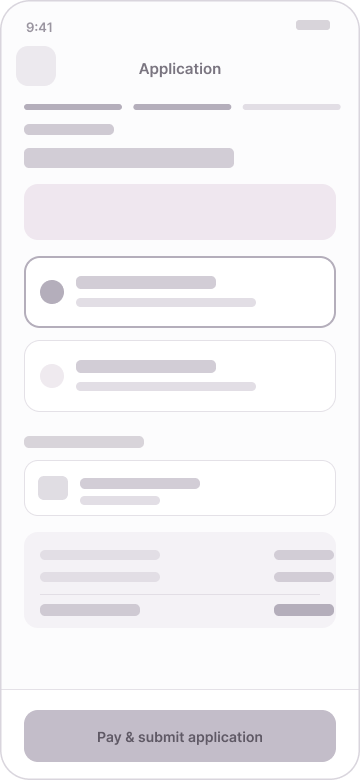
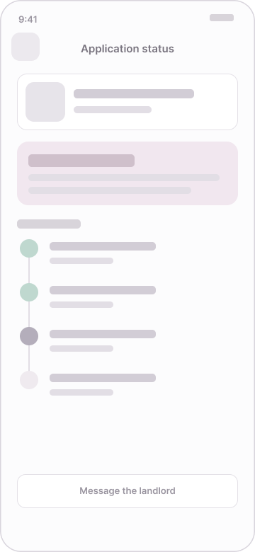

Nestly: find your student home without the panic
Designing an app that helps international students in the UK find a verified home, tour it from anywhere, and apply for a tenancy without a UK guarantor.
Project Overview
Nestly is a concept product for international students arriving in the UK. The audience is studying abroad for the first time, often arranging accommodation from another country before they have ever set foot on campus. They are time-poor, unfamiliar with the UK rental market, and cautious about who to trust online.
International students routinely commit to a room they have never seen, from listings they cannot verify, and are then blocked by landlords who demand a UK-based guarantor they do not have. The process is stressful, slow, and full of avoidable risk.
Design a mobile app that lets students find verified housing, view it remotely, and apply for a tenancy guarantor-free — in the easiest, most reassuring way possible, from anywhere in the world.
Sole UX/UI designer — research framing, information architecture, branding, design system, 25 screens, and an interactive prototype, from concept to delivery.
3 weeks · concept project, 2025. Tools: Figma.
I followed a user-centred design process, moving from understanding the user through to refining the design against feedback.
Understanding the User
I ran six informal interviews with international and out-of-area students and read through university housing guides and student forums. The aim was to understand how they search, what frightens them, and what finally makes them commit. The research confirmed that time pressure mattered, but it also surfaced a deeper issue: a lack of trust, made worse by never being able to view a place in person, and a hard financial barrier in the guarantor requirement.
Can't view first
Students commit to a room sight-unseen from another continent and simply hope the photos were honest.
Hard to trust
Listings are scattered and scam stories are common, so every deposit feels like a gamble.
The guarantor wall
Most UK landlords require a UK-based guarantor that overseas students cannot provide.
Hidden costs surprise
Unexpected fees for utilities and maintenance often catch students off guard after signing contracts.
- Secure a verified room remotely
- See what she's paying for
- Apply without a guarantor
- Can't trust listings from afar
- No UK co-signer
- Time-zones block live viewings
Starting the Design
From the journey map I mapped a clear task spine — discover a verified home, tour it, apply guarantor-free, then track the decision — with secondary paths (filters, reviews, messaging, payments, settings) branching off without blocking it.




I sketched each core screen on paper first, then translated the strongest ideas into 25 low-fidelity wireframes to argue with structure and flow before any visual styling. The complete lo-fi set maps one-to-one to the final designs.
I ran a lightweight, concept-stage usability walkthrough of the lo-fi prototype to find where the flow confused people before investing in high fidelity.
Reassure earlier
People wanted the guarantor-free explainer and trust signals before the price, not after.
Show progress
In the multi-step application, people lost track of where they were and how long was left.
One clear action
Screens with several competing buttons slowed decisions; each needed a single primary action.
Simplify language
Users struggled with jargon; clearer, straightforward terms improved comprehension and trust.
Refining the Design
Acting on the findings, I moved the guarantor-free explainer high up the listing detail screen, added a progress bar and a live status timeline to the application flow, and gave the deposit screen a single, confident primary action with a fully itemised total so nothing felt hidden.


The final UI applies the Nestly brand and design system across 25 device-framed screens. A few of the key ones:
Home
Search and verified listings front-and-centre, with a notifications bell in the header.
Listing detail
Tour, reviews and the guarantor-free explainer surfaced before the price.
Guarantor-free deposit
Clear options and a transparent total — the highest-anxiety moment, made calm.
Application status
A live timeline turns the wait into something visible, with a direct line to the landlord.
The interactive hi-fi prototype follows the same flow as the lo-fi version. It starts at 01 · Onboarding and only real controls navigate — the whole guarantor-free journey, from discovery to a live application status, in one continuous flow.
Lessons learned
The early steps — personas, the journey map and the usability walkthrough — were the real foundation; every later screen traced back to them.
Designing for emotion mattered as much as function. Lowering anxiety, not just adding features, became the brief.
A small design system built first is what let the project scale to 25 consistent screens without drifting.
The process was not linear — testing sent me back to redesign, and that round-trip made the product noticeably better.
Thanks for reading.
Designing from lived experience is a superpower — but testing kept me honest about where my experience wasn't universal.